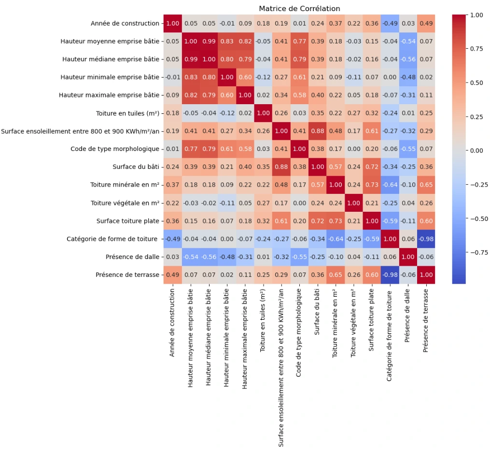
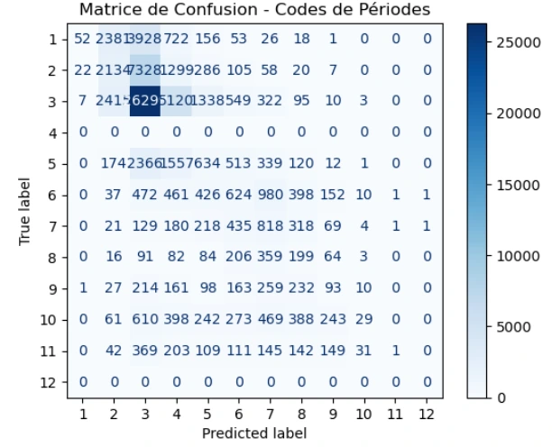

Compléter une base de données du bâti par apprentissage automatique
Projet de recherche et innovation · Polytech Tours · 2025
Dans la base des bâtiments de Paris publiée par l’APUR (Atelier parisien d’urbanisme), un bâtiment sur trois n’a pas de date de construction. D’où la question de ce projet de recherche : les bâtiments bien renseignés peuvent-ils servir à deviner ce qui manque aux autres ? La date n’était qu’un cas d’essai, le vrai sujet était la méthode.
La question, et le cas d’étude choisi
Ce que je cherchais à savoir
Une base du bâti en dit-elle assez sur elle-même pour reconstituer ce qui lui manque ? L’apprentissage automatique fonctionne par l’exemple. On montre au programme des milliers de bâtiments dont tout est renseigné, à lui de repérer les régularités, par exemple qu’une toiture plate accompagne souvent une construction récente. Il applique ensuite ces régularités aux bâtiments dont la date manque. Restait à savoir si ça marche sur une vraie base, et avec quelle marge d’erreur.
Pourquoi la date de construction
Parce qu’elle ne se calcule pas. Une surface, une hauteur, une pente de toit se mesurent dans un SIG (système d’information géographique) ; une date, non : soit elle figure dans la base, soit elle manque. Et parce qu’elle est utile. L’époque de construction renseigne les matériaux, le vitrage et l’isolation, donc les consommations de chauffage, donc les bâtiments à rénover en premier.
Ce que la machine avait pour travailler
Les variables de la base
Les quatre hauteurs de l’emprise bâtie (moyenne, médiane, minimale, maximale), la surface au sol, la surface de toiture ventilée par matériau (tuile, minéral, végétal, toiture plate), la forme de la toiture, la présence d’une dalle ou d’une terrasse, un code de type morphologique, et la surface du bâtiment recevant entre 800 et 900 kWh de soleil par m² et par an. Rien qui situe ou qualifie le bâtiment : ni adresse, ni arrondissement, ni usage. Uniquement sa forme.
Le premier coup d’œil
Avant de lancer le moindre calcul, la matrice ci-dessous répond à une question simple : est-ce que l’une de ces variables a seulement quelque chose à voir avec l’âge du bâtiment ?

Pleine résolution ↗
La méthode
Le nettoyage, le gros du travail
128 176 bâtiments au départ. On retire les lignes incomplètes, les bâtiments sans date, qui n’apprennent rien au modèle, et les valeurs extrêmes, qui fausseraient l’apprentissage. Restent 68 854 bâtiments exploitables.
L’apprentissage, puis la note
Les bâtiments sont séparés en deux groupes. Le modèle apprend sur le premier ; sur le second, il ne voit que les formes et doit annoncer une date, qu’on compare ensuite à la vraie, qu’il n’a jamais eue sous les yeux. Trois algorithmes sont mis en concurrence de cette façon, l’arbre de décision, la forêt aléatoire et le gradient boosting (le premier pose une suite de questions sur la forme du bâtiment, les deux autres combinent des centaines d’arbres de ce type), sur neuf découpages différents.
Les résultats
En demandant une année
La forêt aléatoire l’emporte, de peu : 28 ans d’erreur moyenne, et 38 % des variations de la date expliquées par la forme des bâtiments. Vingt-huit ans, c’est l’écart moyen entre la date annoncée et la vraie, sur un parc qui s’étale du XVIIe au XXe siècle. C’est trop pour dater un bâtiment précis, même si le modèle fait bien mieux que le hasard.
En demandant une période
La base de l’APUR ne donne pas que l’année : elle range aussi chaque bâtiment dans une période de construction, et cette case-là est renseignée bien plus souvent, 103 718 bâtiments exploitables au lieu de 68 854. La question devient plus facile, puisqu’il s’agit de choisir entre onze époques plutôt que de viser une année. 44 % des bâtiments sont classés dans la bonne période, et l’erreur moyenne est d’à peu près une période d’écart, ce qui ne veut pas dire la même chose partout : les périodes vont de sept ans à plus de soixante.
Les onze périodes de l’APUR

Pleine résolution ↗
Ce que ça vaut, et ce que ça ne vaut pas
La réponse à la question de départ
Oui, une base du bâti peut se compléter en partie toute seule, mais à deux conditions. Il faut assumer une marge d’erreur, connue et affichée. Et il faut que la donnée manquante ait un lien réel avec ce que la base décrit déjà : ici, la forme d’un bâtiment ne dit qu’une partie de son âge. C’est la conclusion que je tire de mes propres chiffres, et elle est plus réservée que ce que j’attendais en commençant.
Ce qui ne se transpose pas
Le modèle a appris sur les variables de l’APUR. La BDTOPO (la base topographique nationale de l’IGN), qui couvre le reste du territoire, ne décrit pas les bâtiments avec les mêmes : pour l’utiliser ailleurs, il faudrait se limiter aux variables communes aux deux bases, et vérifier que le résultat tient encore.
Ce que je ferais autrement
Les réglages des algorithmes ont été faits à la main, un par un ; une recherche systématique irait chercher un peu mieux. Et pour les périodes, j’ai fait estimer un nombre avant de l’arrondir, alors qu’il s’agissait de ranger des bâtiments dans des cases : un algorithme de classement aurait été plus adapté, et n’aurait pas pu inventer une période inexistante.
Outils
Données
Contient des données de l’Atelier parisien d’urbanisme (APUR), jeu EMPRISE BATIE PARIS, sous licence ODbL 1.0.
Envie d’en savoir plus ?
Le rapport complet, le code et les résultats détaillés peuvent être communiqués sur demande.